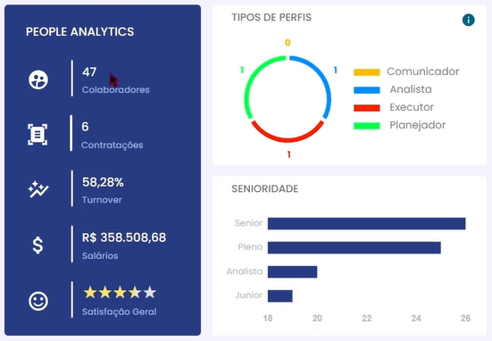
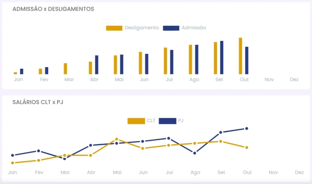

Nosso sistema revolucionário surge para atender às demandas cruciais da gestão de recursos humanos. Apresentando um panorama abrangente, oferecemos insights sobre o número de colaboradores, contratações, turnover e o montante total investido em salários. Indo além das métricas convencionais, nosso sistema proporciona uma visão detalhada da satisfação geral dos colaboradores e indicadores específicos, como tipos de perfis, senioridade, raças, estado civil e gênero.
Tryevo

Buscando revolucionar a gestão de recursos humanos, destacando-se na análise de dados fundamentais. Ao integrar o People Analytics, oferecemos uma compreensão profunda dos colaboradores, incluindo avaliações DISC para identificar tipos de perfis, proporcionando insights valiosos sobre características comportamentais. Além disso, a análise de senioridade contribui para estratégias de liderança e desenvolvimento, permitindo que as organizações cultivem equipes mais coesas e eficientes. Esses recursos, combinados, capacitam as empresas a tomarem decisões mais informadas para otimizar a gestão de talentos.

Além disso ele oferece uma abordagem eficaz para o ciclo de vida dos colaboradores, desde a admissão até o desligamento. Analisamos detalhes cruciais no processo de admissão, facilitando a integração e identificação de padrões para retenção. Ao mesmo tempo, avaliamos desligamentos para insights proativos. Além disso, fornecemos uma análise concisa dos custos associados aos modelos de contratação (CLT e PJ), permitindo ajustes precisos na estrutura salarial para otimizar o equilíbrio entre satisfação e sustentabilidade financeira.
- Data do Projeto: Janeiro de 2022
- Categoria: Gestão Empresarial
- Cliente: Tryevo
Conduza a sua empresa para o futuro da gestão empresarial com nosso portal abrangente, fornecendo não apenas informações, mas insights acionáveis que impulsionam a eficiência, a harmonia na equipe e o sucesso sustentável.
Voltar ao início